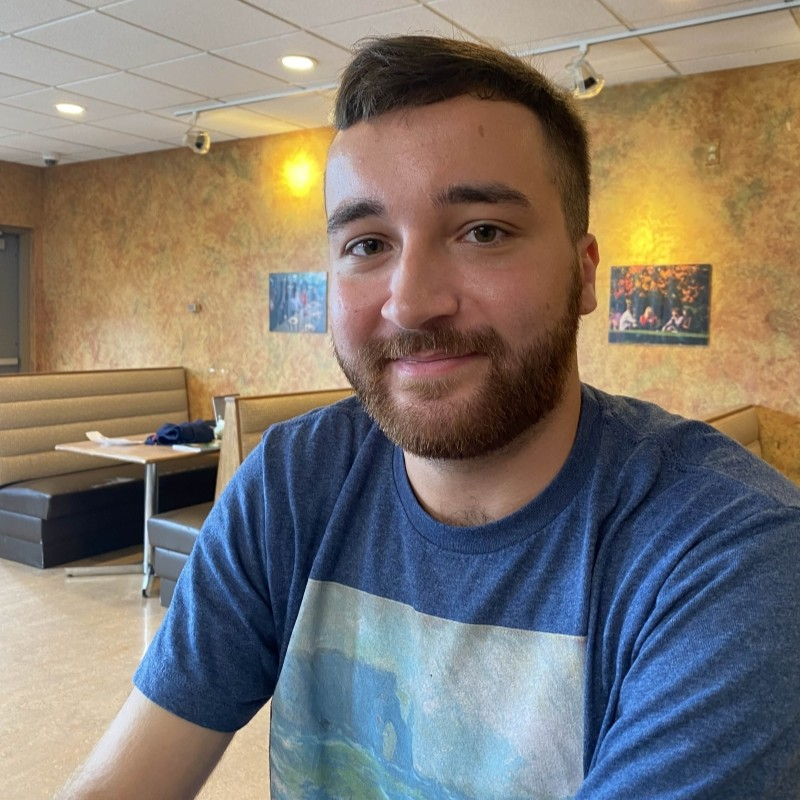

My name is Sam Swedo, I am a Computer Science Major with a Minor in Cybersecurity. I love to swim, game, and watch wrestling. I have 2 brothers and 2 dogs. The dogs also love to swim in the pool!
Senior, Year 4
I have a lot of passion for technology, and I like to create things and this degree will help me learn a wide variety of skills so that I can be successfull in my career and for my own personal projects!
I am taking this course because I want to become a better programmer and get experience working on a near real world project. I will be able to work with the dean, assistants, and other people in order to gain ideas and add content to the project. It is very exciting to also now be the main team and owning the project.
I worked at a golf course as a bagger. It was my responsibility to clean, maintain, and charge 78 golf carts, while bringing them out to members. I also store member's golf clubs as well as clean them!
I have a lot of hobbies and special interests. I like things like gaming, wrestling, technology, swimming, and more. I enjoy going out on walks and exploring nature. I also like to build gaming computers for myself and my friends!
I like to develop video games and I tend to help a lot of my friends build and maintain their computers! I find it very fascinating and fun to do.